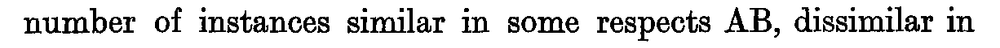

Chapter XVIII. Introduction (Part III)
J. M. Keynes, A Treatise on Probability (London: Macmillan, 1921), first edition, pp. 217–221 (Cornell copy, PDF pp. 237–241). Formula atlas: every ledger row of the chapter beside the printed line it records.
| Ledger rows | 1 |
|---|---|
| Formulas | 0 (display 0, inline 0; items 0, numbered 0) |
| Formulas by Lean status | ✓0 ≈0 ✎0 未0 |
| Notation | 1 (with a Lean counterpart 0) |
| Reference rows | 0 |
Every count on this page is computed from the census ledger, which is built from the page images of the 1921 first edition only (no translation, OCR or e-text is used to count). A formula is an expression containing a relation sign (=, ≠, <, >, ≤, ≥, ≡, ⊃, → and their printed variants, including formulas inside figures, tables and footnotes, and formulas quoted from other authors); a display formula counts one per printed line, so a chain of equalities set over three lines counts three, and an inline formula counts one per expression. A compound expression without a relation sign (such as a/h, g(φ, f) or x1x2…xn/ġh) is counted separately as notation; a bare symbol, even with subscripts, primes or bars, is not counted. Footnote formulas follow the same rule, and a formula reprinted on another page is counted again. The Lean column of a formula row takes one of four values, fixed mechanically: ✓ the printed relation appears as stated in a theorem (only the names of bound variables, Lean notation and the layout of subscripts may differ); ≈ a theorem states an algebraically equivalent form (cleared denominators, a definition substituted, a change of variables); ✎ the printed line is refuted or not derivable, and a corrected form is proved; 未 none of these (a line inside a proof, a definition only, or no counterpart).
ch18-001

- Transcription
AB- Lean
- 未
- Anchor words
similar in some respects AB, dissimilar in- Remarks
- 特性集合のラベルの並置 (連言)。同文中の
C、次文のA,Bは裸記号 (ヘッダ注記) - Crop
- folio 219, x 125–1335, y 1918–1970 (full-size scan pixels)